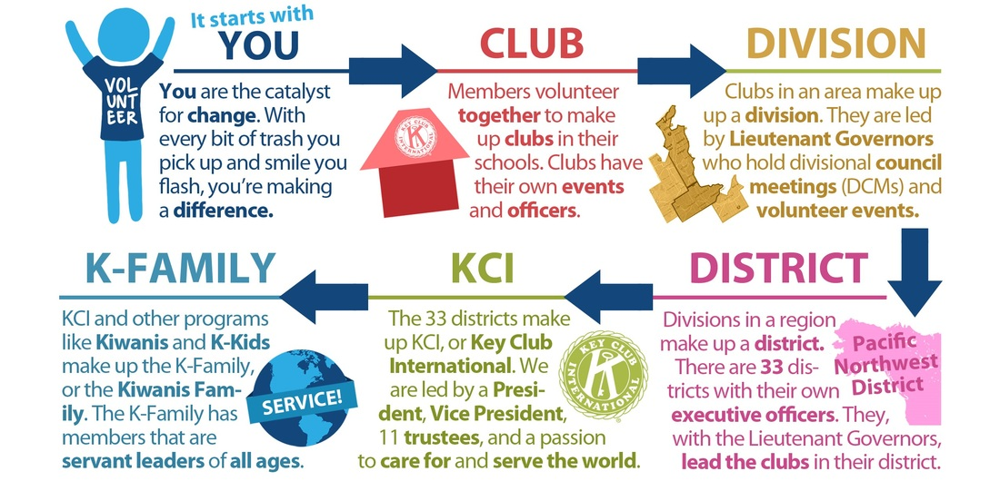

Key Club International is the oldest and largest service program for high school students. This international organization is led by students who learn leadership through their service. Key Club International is sponsored by Kiwanis International, and is currently assisting Kiwanis in helping the children of the world. Right now, there are over 260,000 members from 5,000 clubs from 34 nations. In 1925, the first Key Club was established in Sacramento, California by the local Kiwanis club. Two men from Kiwanis proposed the idea of having a "junior service program," and first opened it to the "key" boys of the school (who wanted to serve the school in any way possible and create more school spirit). Thus, Kiwanis dubbed this organization "Key Club."
Kiwanis International is an organization dedicated to change the world. They feed the hungry, help shelter the homeless, mentor the disadvantaged, teacher students how to become leaders and help in their community, raise money for research for pediatrics, and make a substantial difference. The Key Club service initiative is the hands-on element of the Major Emphasis. All of the hands-on service provided to children by Key Club International members is directed to a single area of need, to make a substantial impact. The current service initiative, The Eliminate Project, allows Key Clubbers joining forces with Kiwanis International and UNICEF eliminate maternal and neonatal tetanus.
EWHS Key Club is one of the twelve schools that make up Division 21. Division 21 is one of the 44 divisions within the PNW District. We meet every week on Tuesdays at 7PM which lasts for about an hour. Edmonds-Woodway Key Club is involved in many neighboring organizations including Annie’s Kitchen, March of Dimes, and KCCP. A service event unique to our Key Club is making pumpkin pies for the homeless during the holiday season. It’s a fun way to bring our members together as well as give back to our community. For more updates on events going on in our division, join the Facebook group "PNW Division 21 Key Club."
Every minute a baby is born too soon. Every day, 72 babies die due to preterm birth complications. All year long, YOU can make a difference for all babies.
The mission of the March of Dimes is to improve the health of babies by preventing birth defects, premature birth, and infant mortality. March of Dimes was founded by our 32nd President, Franklin D. Roosevelt, in the fight against polio. After the discovery of the polio vaccine, March of Dimes focused their efforts to improve the health of babies and has been successful with the help and enthusiasm of many grassroots volunteers.
Every minute, 62 children enter a Children's Miracle Network Hospital. These hospitals need donations to continue providing the best care available to the tiniest of patients.
Children’s Miracle Network Hospitals (CMN Hospitals) is a nonprofit organization that raises money to benefit hospitalized kids while increasing awareness of its member hospitals. All CMN Hospitals contributions directly benefit hospitals, helping to purchase up-to-date equipment, train staff, conduct life-saving research, implement outreach programs and provide health care for children whose parents can’t afford to pay.
UNICEF, the only organization of the United Nations dedicated exclusively to children,works with other United Nations bodies, governments and non-governmental organizations to assist in children’s needs through community-based services in primary health care, basic education, and safe water and sanitation in more than 150 developing countries.
UNICEF shares the Kiwanis family’s global commitment to children and has provided its extensive resources and leadership to assist in the Worldwide Service Project to virtually eliminate Iodine Deficiency Disorder (IDD) from the globe.